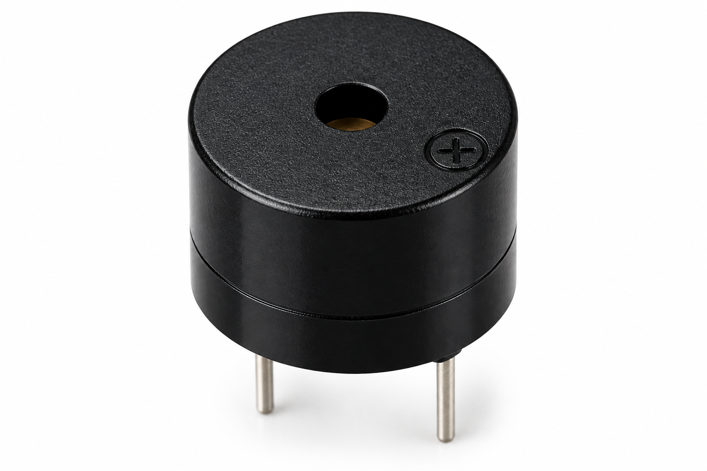

Aim
To build an ESP32-based wireless RFID queue token generator that verifies authorized RFID cards, generates sequential tokens, displays status on an OLED, provides buzzer feedback and exposes system information through a web dashboard.
About the Experiment
The RC522 reader scans an RFID card and compares its UID with two authorized UIDs. Authorized cards generate a three-digit token and receive success feedback; unauthorized cards are denied. The OLED shows ready, granted, denied and reset states. A browser dashboard displays the current token, total tokens, last UID, scan result, last event, ESP32 IP address and uptime, while both a physical reset button and /reset web route can reset the counter.
Components Required

ESP32 DevKitC (×1)
Main controller with built-in Wi-Fi.

RC522 RFID Reader (×1)
Reads RFID card identification values.

RFID Card / Key Fob
Used as the RFID identification input.

0.96" OLED SSD1306 I²C (×1)
Displays token and RFID status.

Buzzer (×1)
Provides access feedback sounds.

Push Button (×1)
Used to reset the token counter.

Breadboard (×1)
Used to assemble the circuit.

Jumper Wires
Used for electrical connections.
Circuit Connections
| Component | Pin | ESP32 Connection |
|---|---|---|
| RC522 | SDA / SS | GPIO 5 |
| RC522 | RST | GPIO 27 |
| RC522 | SCK | GPIO 18 |
| RC522 | MISO | GPIO 19 |
| RC522 | MOSI | GPIO 23 |
| RC522 | 3.3V / GND | 3.3V / GND |
| OLED | SDA | GPIO 21 |
| OLED | SCL | GPIO 22 |
| OLED | VCC / GND | 3.3V / GND |
| Buzzer | Signal | GPIO 25 |
| Buzzer | GND | GND |
| Reset Button | Input | GPIO 26 |
| Reset Button | Other side | GND |
Circuit Diagram
Connect the RC522 RFID reader, OLED display, buzzer and reset button to the ESP32 as shown in the circuit diagram.

Working Principle
↓
OLED + RFID + Wi-Fi Initialize
↓
Reader Waits for Card
↓
Read RFID UID
↓
Compare with Authorized UIDs
↓
Authorized → Increment Token + Success Beep + OLED Granted
↓
Unauthorized → No Token + Error Beep + OLED Denied
↓
Dashboard Updates Every 1 Second
Procedure
- Connect the RC522 to the ESP32 SPI pins and reset pin.
- Connect the OLED to GPIO 21 (SDA) and GPIO 22 (SCL).
- Connect the buzzer signal to GPIO 25.
- Connect the reset push button between GPIO 26 and GND.
- Upload the sketch and open Serial Monitor at 115200 baud.
- Wait for Wi-Fi connection and note the ESP32 IP address.
- Open the IP address in a browser to view the token dashboard.
- Scan an authorized RFID card and verify that a new three-digit token is generated.
- Scan an unauthorized card and verify that access is denied and no token is created.
- Use the physical reset button or dashboard reset control to return the counter to 000.
Explore the Code
Key sketch sections used in this experiment:
#include <WiFi.h>
#include <WebServer.h>
#include <SPI.h>
#include <MFRC522.h>
#include <Wire.h>
#include <Adafruit_GFX.h>
#include <Adafruit_SSD1306.h>
#define RFID_SS 5
#define RFID_RST 27
#define RFID_SCK 18
#define RFID_MISO 19
#define RFID_MOSI 23
#define OLED_SDA 21
#define OLED_SCL 22
#define BUZZER_PIN 25
#define RESET_BUTTON 26
MFRC522 rfid(RFID_SS, RFID_RST);
WebServer server(80);
int currentToken = 0;
int totalTokens = 0;
const unsigned long DUPLICATE_DELAY = 3000;
byte authorizedUID1[] = {0x01,0x02,0x03,0x04};
byte authorizedUID2[] = {0x55,0x66,0x77,0x88};
String formatToken(int number) {
char buffer[10];
sprintf(buffer, "%03d", number);
return String(buffer);
}
void loop() {
server.handleClient();
if (digitalRead(RESET_BUTTON) == LOW) {
resetSystem();
delay(500);
return;
}
if (!rfid.PICC_IsNewCardPresent()) return;
if (!rfid.PICC_ReadCardSerial()) return;
if (millis() - lastScanTime < DUPLICATE_DELAY) return;
lastScanTime = millis();
currentUID = readUID();
if (isAuthorized(rfid.uid.uidByte, rfid.uid.size)) {
currentToken++;
if (currentToken > 999) currentToken = 1;
totalTokens++;
scanStatus = "AUTHORIZED";
showGrantedScreen();
successBeep();
} else {
scanStatus = "DENIED";
showDeniedScreen();
errorBeep();
}
rfid.PICC_HaltA();
rfid.PCD_StopCrypto1();
}Expected Output
The OLED initially shows READER: READY and the current three-digit token.
Scanning an authorized card changes the status to ACCESS GRANTED and generates the next token.
Scanning an unauthorized card shows ACCESS DENIED and does not increase the token counter.
The web dashboard displays token number, total generated tokens, last RFID UID, scan status, last event, IP address and system uptime.
The reset control returns the token counter to 000.
Result
What You Learn
- Interfacing the MFRC522 reader with ESP32 over SPI.
- Reading and formatting RFID UIDs.
- Comparing scanned cards with authorized UID arrays.
- Generating fixed-width three-digit queue tokens.
- Preventing rapid duplicate RFID scans.
- Using an SSD1306 OLED for status screens.
- Generating buzzer feedback for granted and denied scans.
- Creating live /api and /reset web-server endpoints.
- Using a physical INPUT_PULLUP reset button.